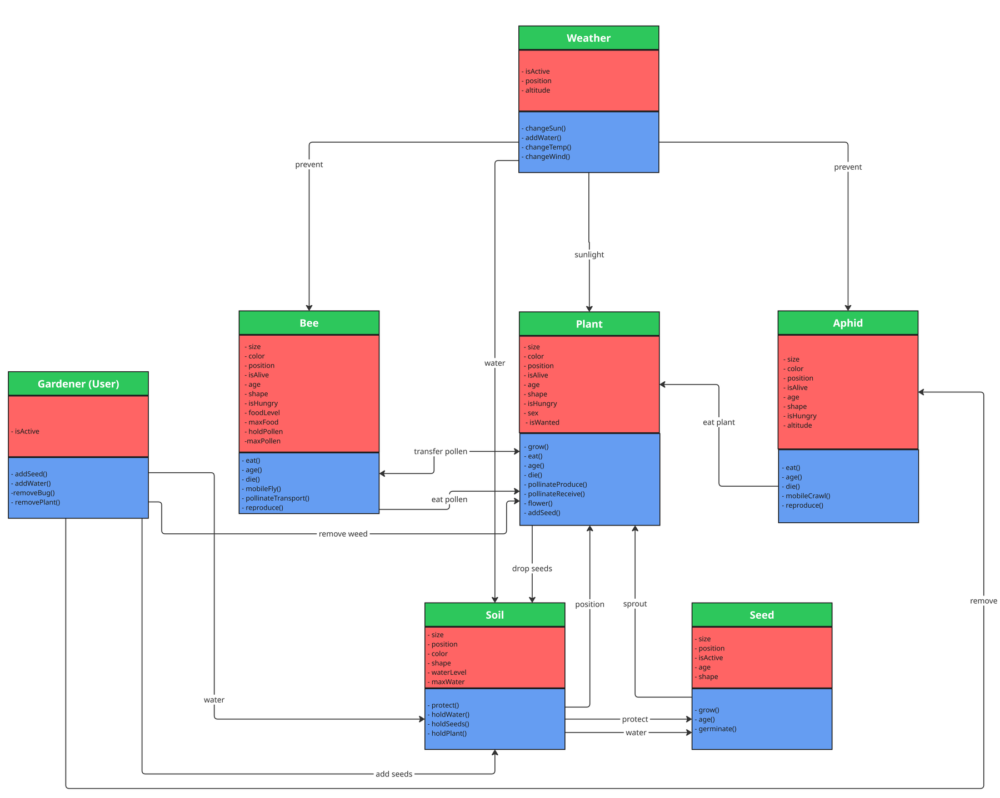
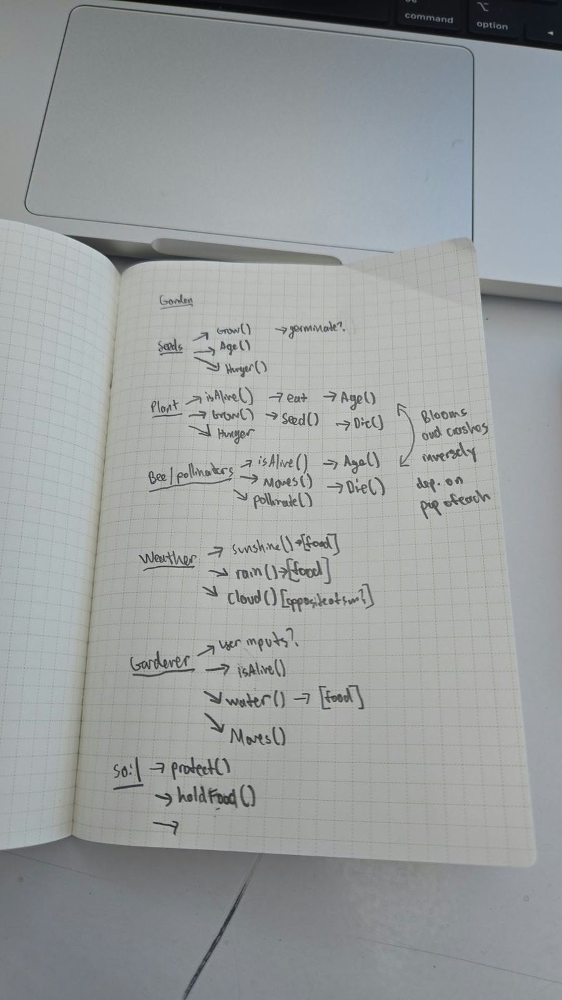
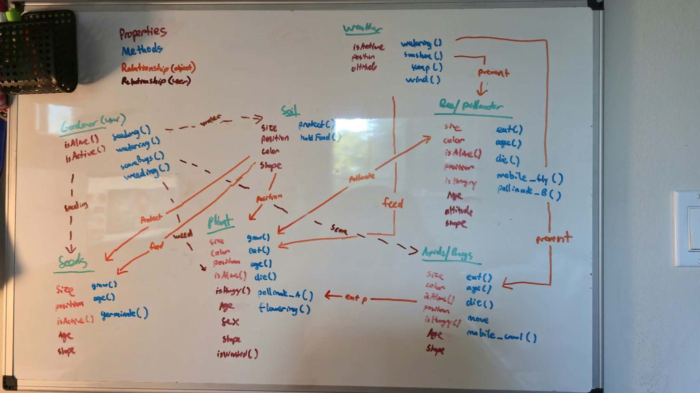
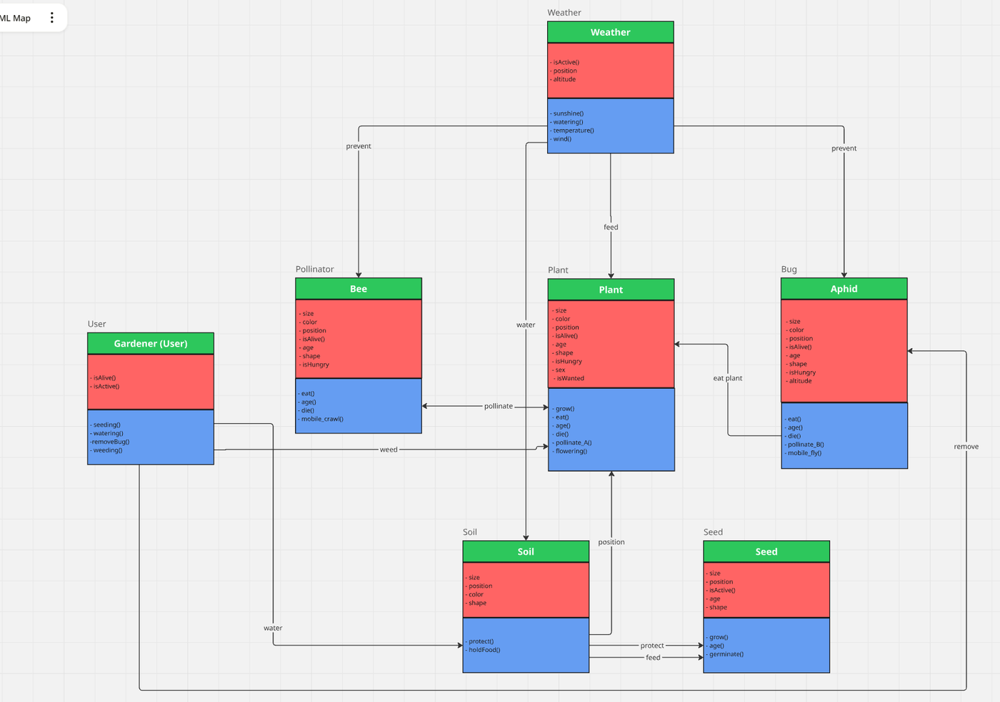
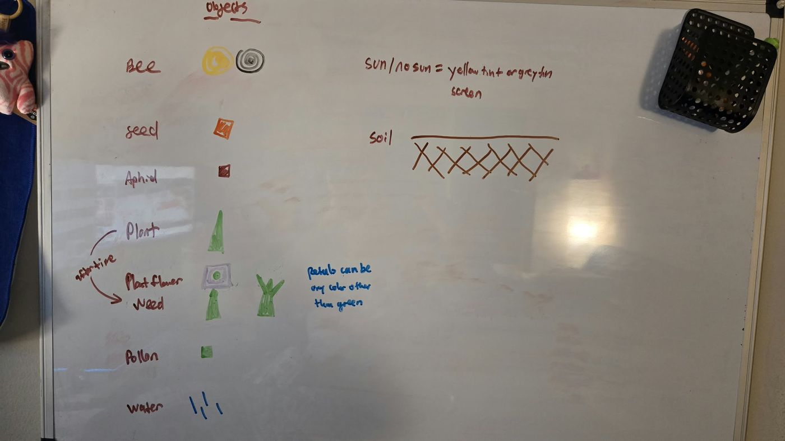

GIXD-503: A self-sustained garden by Ian Robinson
A small ecosystem of soil, seeds, plants, bees, and aphids. You can water it, seed it, weed it, and spray it, but I built it to keep going without you.
Pick a tool, then click inside the garden. Keys 1 to 4 also switch tools. The key in the top right of the sketch explains the symbols.
Intent
I wanted to model a self-sustaining system where user interference is only needed by the perfectionists. That thinking led me to the manicured-nature of gardeners but the self-sustainment of a yard: plants need water and sun, flowers need pollinators, pollinators need flowers, and aphids need plants. I also looked at a coral reef, but it needed far more classes and connections than I could build well, so I scoped down to a garden with seven classes.
My professor's pond example (Pond, Amphibian, Fly, Lotus) set the pattern I followed. Every class has properties, methods, and labeled relationships to other classes, and those relationships are what let one element change another.
My goal was a garden that mostly runs itself. The user can nudge it, but the interesting part is what the elements do to each other when nobody is clicking.
The system
- Soil
- Holds water (
waterLevel, capped atmaxWater) and the seeds that land in it. Water evaporates slowly, faster in sun. - Seed
- Falls, lands in the soil, and germinates once it is old enough and the soil is wet.
- Plant
- Drinks from the soil and grows faster in sun. At full size it becomes a flower (60%) or a weed (40%), stored as
isWanted. Flowers make pollen and drop 3 seeds once pollinated. - Bee
- Flies between flowers, eats pollen up to a food cap (
maxFood), and carries some (maxPollen) to a different flower. Reproduces when well fed and starves when not. - Aphid
- Crawls to the nearest plant and eats it with no cap, since aphids never stop eating. Yes aphids do fly, but not in my 800 x 600 px world they dont! Though they do reproduce when their bellies are full here.
- Weather
- Cycles through sun, cloud, and rain, plus a wind that drifts and sometimes gusts. It is a source, not a container, so it delivers random amounts of water without storing any.
- Gardener
- The user. Acts on the garden through four tools.
How elements affect each other
- Weather adds water to Soil, and Soil feeds Plants and Seeds.
- Sun speeds up plant growth. Clouds and rain ground the bees. Rain also pins aphids in place and washes some away.
- Strong wind grounds bees and blows a few aphids off. Lighter wind carries falling seeds sideways and pushes bees off course.
- Bees eat and carry pollen between flowers. Pollinated flowers drop seeds, which closes the loop back to Soil.
- Aphids shrink the plants they eat, and a plant that gets too small dies.
How the user changes it
The Gardener is direct control. Click with the seed bag to drop one seed, with the watering can to pour water into the soil, with the X to remove the nearest plant (flower or weed, so removing without looking has a cost), or with the bug spray to kill aphids near the cursor.
Weather is indirect control. The user cannot choose the weather, but it changes what the user needs to do. A long dry stretch means watering, and a sunny stretch means more growth, more pollen, and more aphids.
Emergent behavior
Nothing in the code sets how many plants, bees, or aphids there should be. Those numbers come from a few loops pushing on each other:
- More flowers means more pollen, which means more bees, more pollination, more seeds, and more flowers.
- More plants means more food for aphids. More aphids means smaller plants, fewer flowers, and fewer bees.
- Plants share one pool of soil water, so the garden can only grow as large as the rain can support.
- A run of cloudy or rainy days grounds the bees while they keep burning food, which can thin them out.
Symbols
The graphics are symbolic. Aphids are red dots because red reads as danger against green, even though real aphids are often green. A grounded bee turns into a gray spiral, and a flying bee is a yellow circle next to a black one. Pollen is pale yellow so it stands out on the plants. A flower's center turns gold once it has been pollinated.
Diagrams

Process
Brainstorm
I started in a notebook by listing each element with the things it does. That turned up the idea I kept through the whole project: bee and plant populations should rise and fall depending on each other.

Whiteboard
Next I moved to a whiteboard and separated properties, methods, and two kinds of relationships: object to object, and user to object. This is where the Gardener, Aphid, and Soil became their own classes.

First digital UML
I rebuilt the diagram in Miro using the same layout as my professor's example.

After reviewing it, I made these changes to reach the final version above:
- Moved true/false states (
isAlive,isHungry) to properties and kept parentheses for methods only. - Fixed the movement methods so bees fly and aphids crawl, and gave the pollen methods clearer names.
- Added the Plant to Soil "drop seeds" arrow so a seed can become a plant and a plant can make new seeds.
- Added
reproduce()to Bee and Aphid so populations can grow, not only shrink. - Added numeric properties so the simulation can run:
waterLevelandmaxWateron Soil, and food and pollen limits on Bee. Aphids get no limit on purpose.
Visual design
Before coding, I sketched how each object would look so the shapes would be distinct from each other. This sketch also showed that weeds are just plants with isWanted set to false, so they did not need their own class.

Building and tuning the sketch
I built the sketch in p5.js one layer at a time: soil, seeds, and plants first, then weather and the gardener tools, then bees, pollen, and aphids. Playing with it changed a few decisions:
- Seeds now drop and fall instead of appearing in the soil, and the gardener drops one at a time. Flowers drop three.
- The tools became cursors: an orange bag, a green watering can with a spout, a red X, and a red spray can.
- My UML had
changeWind()but the first version of the code had no wind, so I added it. - The garden needed to run without help, so I made sunny weather more common, made the soil hold more water for longer, and made flowers produce pollen faster.
- Bug spray was added because the UML already had
removeBug()and the aphids needed a counter the user could apply.